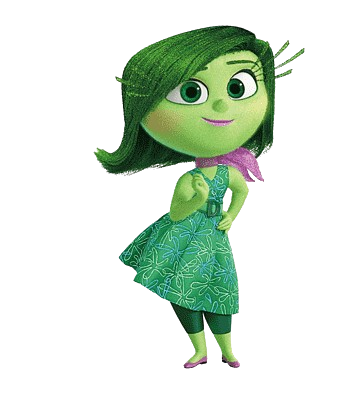
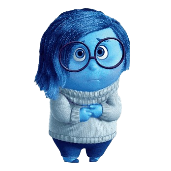
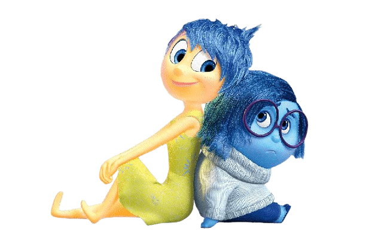

Raiva é um personagem do filme "Divertida Mente", representando a frustração e indignação. Ele é vermelho, tem cabelo em chamas e usa um terno branco. Comportando-se de forma explosiva, Raiva traz humor à história, mostrando que até as emoções mais intensas têm seu papel.

A Nojinho é uma emoção audaciosa, sempre pronta para encarar o que é desagradável com um toque de humor e um olhar atento.


A Tristeza, em "Divertidamente", é uma emoção sensível e empática. Sua presença ajuda Riley a processar experiências difíceis, mostrando que a tristeza é essencial para o crescimento emocional e a conexão com os outros.
Você não pode olhar só o que vai mal. Sempre tem como dar um jeito. É só fazer uma força. (Alegria)